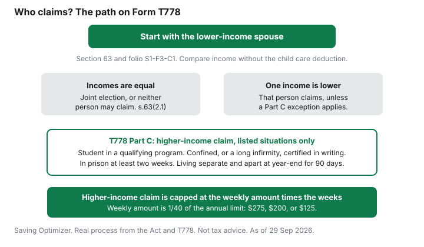

Kids · Canada
Child Care Expense Deduction in Canada: Who Claims It, What Counts and the Limits Per Child

The child care expense deduction in Canada is usually claimed by the lower-income spouse on Form T778. Section 63 limits it to $11,000 a year for a child eligible for the disability tax credit, $8,000 for a child under 7 at year-end, and $5,000 otherwise. Child care that lets you work is a deduction, not a credit you split however you like. The dollar caps sit in section 63 of the Income Tax Act. Who signs for them sits in the same section, and on Form T778. Families miss day camp and before-school care, or the higher-income spouse claims a full year they were not allowed to claim. This page is the rule, then a labelled example. It is not tax advice. Software can prepare the form. It does not decide the facts.
Key takeaways
- Annual limit per child, from section 63: $11,000 if the disability tax credit can be claimed, otherwise $8,000 if the child is under 7 at year-end, and $5,000 in any other case.
- The weekly amount for overnight camp and boarding school is 1/40 of that annual amount: $275, $200, or $125.
- The lower-income spouse usually claims. The higher-income person uses Part C of Form T778 only in the situations the form lists, and then only up to the weekly limit.
- An individual caregiver's receipt must show their social insurance number. Unclaimed expenses cannot be carried to next year.
- The deduction also lowers net income, which can change next July's Canada Child Benefit. That link is on the AFNI guide.
The per-child limits: $8,000 under 7, $5,000 aged 7 to 16, $11,000 with the disability tax credit
Section 63(3), on the Justice Laws site current to 21 September 2026, defines the annual child care expense amount. It is $11,000 if an amount may be deducted under section 118.3 for the child.
That is the disability tax credit. If that does not apply, it is $8,000 when the child is under 7 at the end of the year, and $5,000 in any other case. The heading on this page says aged 7 to 16 because that is the usual reading of the $5,000 band. The Act's own words are "any other case," and the child still has to be an eligible child.
An eligible child is a child of you or your spouse or common-law partner, or a child who depends on one of you and whose income does not exceed the amount set for F in subsection 118(1.1). The child must, at any time in the year, be under 16, or be dependent because of a mental or physical infirmity. A child who is already 16 for the entire year is outside the age test unless the infirmity test is met. The folio says the income figure in that dependant test was $15,000 in 2023 and has been indexed since. It does not print a later year's dollar amount on the chapter used here. Check the folio for the year you file. Do not use $15,000 for a 2025 or 2026 return unless the folio for that year still says so.
Two other caps sit on top of the annual amount. You cannot deduct more than you paid for care that meets the definition. And subsection 63(1) limits the claim to two-thirds of the claimant's earned income for the year. Earned income, in the Act's definition for this section, is employment income, certain related amounts, business income where you are actively engaged, and disability benefits under the Canada Pension Plan or a provincial pension plan as that section defines them. It is not line 23600. A family with a low earned income can have a smaller deduction than the per-child table suggests.
| Child | Annual amount | Weekly amount (1/40) |
|---|---|---|
| Disability tax credit can be claimed (section 118.3) | $11,000 | $275 |
| Under 7 at the end of the year, and not in the row above | $8,000 | $200 |
| Any other eligible child | $5,000 | $125 |
The folio, Income Tax Folio S1-F3-C1, states the same three annual amounts and says you may claim less than the maximum when that helps, but you cannot carry an unclaimed expense into a later year. An amount someone else already deducted is not available to you. There is no pool to save for a higher-income year.
Why the lower-income spouse usually claims, and the exceptions
Folio paragraph 1.22 states the general rule. If there is no supporting person, the taxpayer who paid claims. If there is a supporting person, the person with the lower income claims, unless a listed exception applies. A supporting person is, in short, the child's parent, your spouse or common-law partner, or someone who claimed a section 118 credit for the child, and who lived with you at some point in the year and at some point in the 60 days after year-end.
The Act compares the two incomes without the child care deduction, and without paragraphs 60(v.1) and 60(w). This guide does not rename those paragraphs. Use the words in subsection 63(2). If the two incomes are equal on that comparison, subsection 63(2.1) says neither of you gets the deduction unless you jointly elect to treat one income as higher.
The higher-income person claims only in the situations subsection 63(2) lists. Those are the situations Form T778 Part C is for. The CRA's how-to-claim page for line 21400 says to complete Part C only if you are the person with the higher net income and one of the situations on the form applied. The Act's list is:
- The supporting person was a student at a designated educational institution or a secondary school, in a program of at least three consecutive weeks, spending at least 10 hours a week on courses or work, or, for the month test, at least 12 hours in the month.
- A medical doctor or nurse practitioner certified that the person was incapable of caring for children and was confined for at least two weeks to bed, a wheelchair, or a hospital or similar institution, or was incapable for a long, continuous, and indefinite period.
- The person was confined to a prison or similar institution for at least two weeks.
- Because of a breakdown of the marriage or common-law partnership, the person was living separate and apart from the taxpayer at the end of the year and for at least 90 days that began in the year.
In those cases the higher-income claim is not the full annual amount for the year. It is limited to the periodic child care expense amount multiplied by the number of weeks the exception lasted, with a separate month count for the part-time student test. The periodic amount is 1/40 of the annual amount. For a child under 7 that is $200 a week. For the $5,000 amount it is $125 a week. For the disability amount it is $275 a week. Part C of the form is where that week count is entered. Read the form for the year you file. The chart below is the path, not a substitute for it.

What counts: daycare, nannies, day camps, before-and-after care
The expense has to be for child care services in Canada, for an eligible child, so that you or the supporting person who lived with the child could do one of the things in the definition. Those are the duties of an office or employment, an active business, research or similar work for which a grant was received, or attendance at a qualifying school program.
The folio says fees to hold a daycare spot during a temporary leave, including a maternity leave, may qualify if you remain employed and the payments are aimed at returning to the same employer. That is a fact question. It is not an automatic yes for every leave.
The folio's list of payments that can qualify includes an eligible child care provider, a day nursery or daycare centre, a day camp or day sports school, a boarding school or camp where lodging is involved, and an educational institution for the child care portion. Advertising, placement-agency fees, and mandatory registration fees can qualify when the rest of the definition is met. The list is not closed.
Before-and-after-school care is the folio's split inside a school. Where a school provides both education and care, only the care portion qualifies: supervision before and after class, or at lunch. Payments for a child under compulsory school age are generally care unless the facts show a real educational program. A day sports school for young children is generally treated as having enough child care even when sport is part of the day. An ongoing, goal-oriented program for older children, with certified instructors and measured progress, can be education instead. Paragraph 1.17 of the folio is the test. Do not claim a competitive season as camp without reading it.
The provider, if an individual, cannot be the child's father or mother, a supporting person, a person under 18 who is related to you, or someone for whom you or a supporting person claimed a section 118 credit. The folio notes that a niece, nephew, aunt, or uncle is generally not "related" in the Act's blood-relationship rule, while a brother-in-law or sister-in-law is. That is a definition, not a suggestion to hire family. The care still has to be real, and the receipt rules below still apply.
If you employ the nanny or babysitter, you may have payroll duties: withholdings, a T4, and employer contributions. This guide does not set those amounts. Check CRA payroll rules before you treat the person as a casual sitter. The deduction and the payroll obligation are separate.
What doesn't: tuition, medical care, overnight camp above the weekly limit
Subsection 63(3) excludes medical and hospital care, and other expenses for clothing, transportation, or education, and board and lodging except where the Act allows them inside a camp or boarding-school fee. The folio repeats that list.
Tuition for school is education, not care. A doctor's bill is a medical expense, which is a different credit, described in the household credits guide only at a high level. Do not put the same dollar on two lines.
Meals are not automatically out. The folio says the cost of meals is not disqualified when it is included in babysitting, day nursery, or day camp. Board and lodging at an overnight camp or boarding school is allowed only up to the weekly amount times the weeks the child attended. The rest of an overnight invoice is not a child care expense. A week of overnight camp for a child under 7 is capped at $200 of the fee, even if the camp charged more. Day camp is not subject to that weekly cap. It is subject to the annual amount, the earned-income test, and the "is this actually care" test.
| Counts, when the other tests are met | Does not count |
|---|---|
| Daycare, day nursery, a nanny or babysitter who is an eligible provider | The child's parent, a supporting person, a related person under 18, or a person you claim as a dependant |
| Day camp, and many sports day camps for young children | A program the folio would treat as education or training rather than care |
| Before-and-after class supervision, and lunch supervision, at a school | Tuition and the educational portion of school fees |
| Overnight camp or boarding school, up to the weekly amount times the weeks | The part of an overnight fee above that weekly product |
| Meals included in babysitting, day nursery, or day camp | Clothing, transportation, and medical or hospital care |
| Care in Canada by a resident of Canada, plus the folio's two cross-border exceptions | Care outside Canada, unless one of those exceptions applies. Overnight camp outside Canada is not the border exception. |
Care generally has to be in Canada, by a resident of Canada. The folio describes two exceptions: a factual or deemed resident who is temporarily absent from Canada, and a resident living near the Canada-United States border whose US care is closer than any reasonably accessible Canadian option. The border rule does not cover a boarding school or camp outside Canada. If you are in either situation, read paragraphs 1.19 of the folio rather than stretching this summary.
Receipts, SINs for individual caregivers and filing Form T778
Subsection 63(1) says the payment is proven by filing receipts issued by the payee. Where the payee is an individual, the receipt has to contain that individual's social insurance number.
The CRA's how-to-claim page for line 21400 says the same thing, and says the receipt can be in your name or your spouse's or common-law partner's name. It also says to keep the documents in case the CRA asks, to attach the completed Form T778 to a paper return, and not to send the other documents with that paper return. Follow the instructions printed on the form for the year you are filing. A babysitter who will not provide a SIN is not a receipt you can complete.
The same CRA page says you fill in Parts A and B of Form T778, Part C only in the higher-income situations, and Part D if you were enrolled in an educational program. The step-by-step sentences on that page use 2024 as the year. Use the form for the year you are actually filing. The Act and the folio, not a stale tax-year label, are what set the limits above.
You cannot carry unused expenses forward. If you paid $9,000 for a child whose limit is $8,000, the extra $1,000 is not a deduction next year. If the lower-income spouse had too little earned income to use two-thirds of it, the unused portion is not parked for the higher-income spouse except through the Part C week rules. Claim what the form allows this year.
Whether you prepare the return yourself is the question on the tax software guide. A nanny payroll account, a separation, or a Part C week count are the sorts of facts that make the form longer. They are not, by themselves, a recommendation to hire anyone.
Worked example with made-up inputs
Example with made-up inputs. Two eligible children.
At the end of the year one is 4, so the annual amount is $8,000. The other is 9, so the annual amount is $5,000. Neither is claimed for the disability tax credit in this fiction. Daycare paid for the 4-year-old is $9,200. Before-and-after care paid for the 9-year-old is $3,400. The lower-income spouse's made-up earned income is $36,000. Two-thirds of $36,000 is $24,000. These are not average fees and not average wages.
The 4-year-old's payments exceed $8,000, so $8,000 is the cap for that child. The 9-year-old's $3,400 is under $5,000, so $3,400 is allowed for that child. Together that is $11,400. That is under the $24,000 earned-income limit, so the earned-income test does not cut the claim further. If the lower-income spouse claims, and nobody else deducts the same payments, the allowable deduction in this example is $11,400. The $1,200 of daycare above $8,000 is not claimed, and it is not carried forward.
| Child | Made-up amount paid | Annual limit | Allowed for this child |
|---|---|---|---|
| Age 4 at year-end | $9,200 daycare | $8,000 | $8,000 |
| Age 9 at year-end | $3,400 before-and-after care | $5,000 | $3,400 |
| Total | $12,600 | $13,000 | $11,400 |
Two-thirds of $36,000 is $24,000, which is more than $11,400, so the earned-income cap does not reduce this particular example. Change the earned income and the result changes. If that spouse's earned income were $12,000, two-thirds would be $8,000, and $8,000 would be the claim even though the per-child math allowed $11,400. Summer weeks are the same deduction, with the overnight weekly cap. The summer camp guide builds a nine-week plan on these limits. A deduction that lowers line 23600 can also change the Canada Child Benefit for the following July. That arithmetic is on the AFNI guide, not a second claim.
Sources
- Income Tax Act, section 63, Justice Laws, Act current to 21 September 2026 and last amended on 18 June 2026, as of 29 Sep 2026. Annual amounts $11,000, $8,000, and $5,000. Periodic amount is 1/40. Eligible child, supporting person, earned-income limit of two-thirds, receipt with an individual's SIN, lower-income rule, equal-income election, and the higher-income week limits.
- CRA, Income Tax Folio S1-F3-C1, Child Care Expense Deduction, as of 29 Sep 2026. What counts, what is excluded, day camp versus training, school supervision, no carry-forward of unclaimed expenses, and the two exceptions to the in-Canada rule.
- CRA, how to claim line 21400, as of 29 Sep 2026. Form T778 Parts A, B, C, and D. Individual caregiver's SIN on the receipt. Keep documents. Attach the form, not the other papers, to a paper return. The steps on that page use 2024 as the year in the sentences. Use the form for the year you file.
- The $9,200, $3,400, and $36,000 figures are an example with made-up inputs.
Frequently asked questions
How much can I claim for child care expenses in Canada?
Section 63 of the Income Tax Act sets an annual amount per eligible child: $11,000 if the disability tax credit can be claimed for the child, otherwise $8,000 if the child is under 7 at the end of the year, and $5,000 in any other case. The claim is also limited to two-thirds of the claimant's earned income, and to what was actually paid. Unclaimed expenses cannot be carried forward. Confirm the year on Form T778.
Which parent claims the child care deduction?
The spouse or common-law partner with the lower income usually claims it, and the Act compares those incomes without the child care deduction itself. If the incomes are equal, you file a joint election or neither of you can claim. The higher-income person claims only in the situations listed for Form T778 Part C, and then only up to the weekly limit times the weeks. This is not tax advice.
Can I claim summer day camp?
A day camp can qualify as child care when the purpose is care that lets you work, run a business, do funded research, or study in a qualifying program. The CRA folio treats a day camp, including many sports day camps for young children, as child care, while an overnight camp is limited to the weekly amount, which is 1/40 of the annual limit. A training program that is really education may not qualify. Read folio S1-F3-C1.
What receipts do I need?
The Act requires a receipt from the payee, and if the payee is an individual the receipt has to show that person's social insurance number. The CRA's how-to-claim page says to keep the documents in case the CRA asks, and to attach Form T778, not the other papers, to a paper return. Follow the instructions for the year you file. A missing SIN on an individual's receipt is a problem you fix before you claim.
Can I claim a nanny or babysitter?
Babysitting and care by an eligible provider can count, if the other tests are met and the care was in Canada, with the exceptions in the folio. The provider cannot be the child's parent, a supporting person, someone under 18 who is related to you, or a person you claim a dependant credit for. If you employ the caregiver, check the CRA's payroll rules. The receipt still needs the individual's SIN.
Researched and drafted with AI assistance and fact-checked against official Canadian sources. How we create content.
Note: Software does not decide who may claim the deduction. Education only. This is not tax advice. Confirm the claim with the CRA and Form T778.